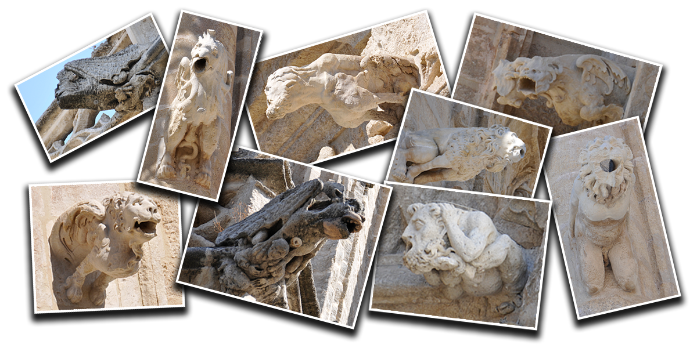
|
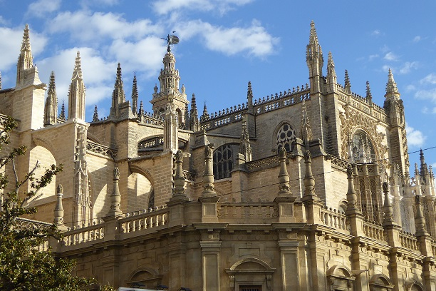 |
De muchos y variados aspectos.Las primeras acorde a los canones góticos, las más posteriores en
linea desde el renacimiento.
Es el bastión de las gárgolas, donde más abundan y diversidad
hay.
|
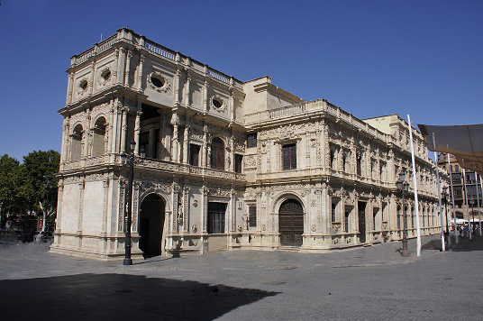 |
Edificio singular la casa consistorial construido en estilo Renacentista Plateresco(1528 - 1574) con su espectacular trabajo de talla de piedra por la parte trasera situado en la calle San Francisco
|
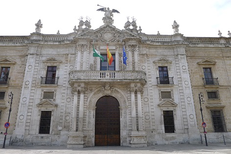 |
Fue la sede de la primera fábrica de tabacos establecida en Europa. Es el edificio industrial más importante de España del siglo XVIII Actualmente es la universidad de Sevilla
|
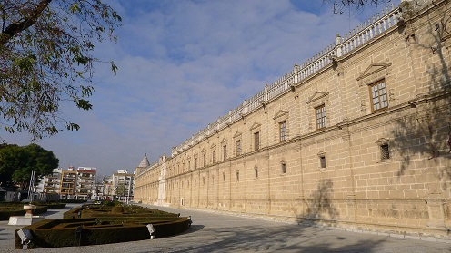 |
Fundado en 1500. Ahora es la sede del parlamento de Andalucía. Tiene muchas gárgolas en la fachada que da a los jardines y en uno de sus laterales.
Descubrela|
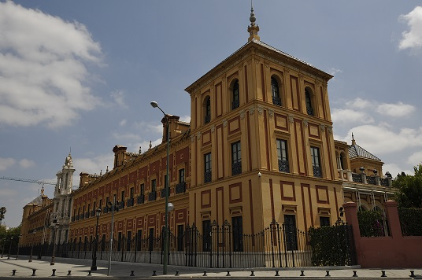 |
Edificio barroco construido entre los siglos XVII y XVIII para ser la sede de un colegio de marineros. Ahora es la sede de la Junta de Andalucia.
Descubrela|
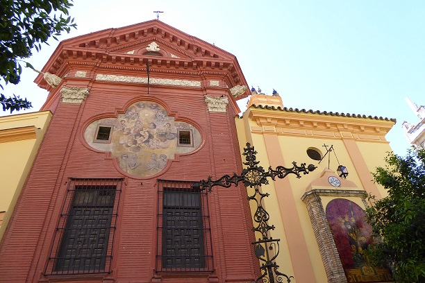 |
La iglesia actual se construyó a mediados del siglo XIV, siguiendo los parámetros gótico-mudéjares. Durante el siglo XVIII se realizan diversas reformas.
Descubrela|
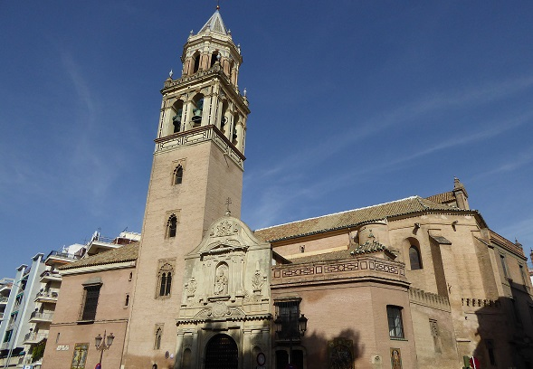 |
Templo católico de estilo gótico-mudéjar construido en el siglo XIV y reformado en los siglos XVI y XVIII. Ahora sede de la Parroquia de San Pedro y San Juan Bautista.
|
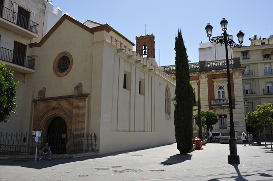 |
La capilla es de estilo gótico-mudéjar tardío, Consta de tres fachadas: la entrada, en la avenida de la Constitución, la de la Epístola, en la puerta Jerez y la trasera, en la calle San Gregorio, donde podemos ver la gárgola.
Descubrela|
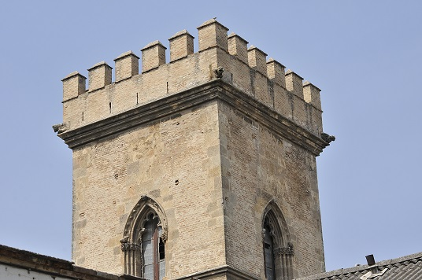 |
Fundado en 1289. Las gárgolas se muestran en la esquinas de la torre de Don Fabrique, en el patio del convento. Ahora destinado a usos culturales del ayuntamiento.
|
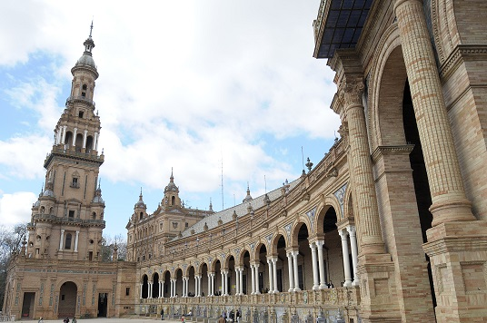 |
Edificio principal y de mayor envergadura, de la Exposición Iberoamericana de 1929. Diseñado por Aníbal González en 1914 Sus gárgolas son de cerámica.
Descubrela|
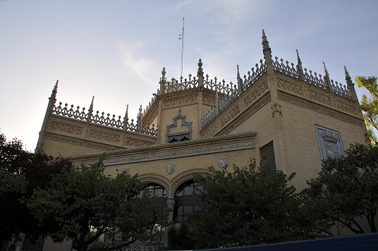 |
Es un edificio de planta poligonal con decoración neogótica. Diseñado por Aníbal González en 1916 para la exposición Iberoamericana de 1929. Sus gárgolas son de ceramica.
Descubrela|
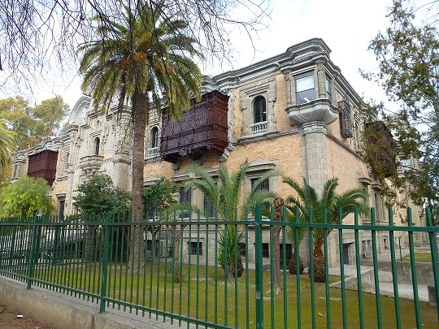 |
Edificio histórico del conjunto patrimonial de la Exposición Iberoamericana de 1929.
Sus
gárgolas son del estilo precolombino.
|
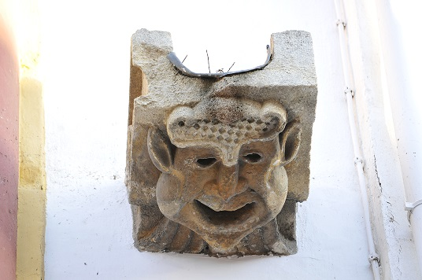 |
Edificio de estilo neoclásico, cuya construcción se inició en 1794 siendo terminada en el año
1841
La gárgola la podemos ver al lado de la fachada principal flaqueada por dos altas
torres.
|
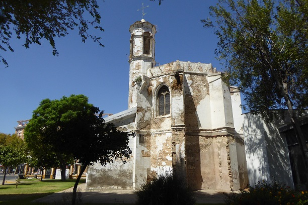 |
Edificio del siglo XIII, Hospital más antiguo de Sevilla, albergando a los leprosos, la gárgola podemos verla en la antigua iglesia de estilo mudéjar, detrás del hospital.
Descubrela|
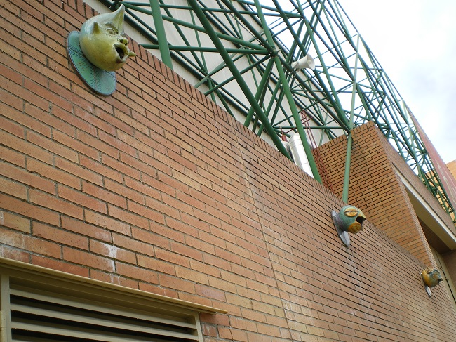 |
Llamado FIBES. Espacio para el desarrollo de grandes eventos culturales y sociales desde
1989.
Son gárgolas tipo máscaras grotescos, de cerámica.
Gárgola de la fachada del edificio, situado en el centro histórico, la podemos
encontrar cerca de la catedral, casi esquina con C./Placentines.
Es un tipo de máscara o mascarón, fueron gárgolas posteriores y elaboración de otros
materiales y más sencillas.
Gárgola tipo de máscara o mascarón de ceramica, incustrado en las tejas del tejado del mercado de Triana.
Es una gárgola de cerámica situada en una fachada de un edificio antiguo del barrio
de Triana.
Es más moderna, de elaboración más elemental, aunque no se puede quitarle su mérito
artesanal.
Lamentablemente ya no se hacen las gárgolas como las originales
del gótico talladas en piedra
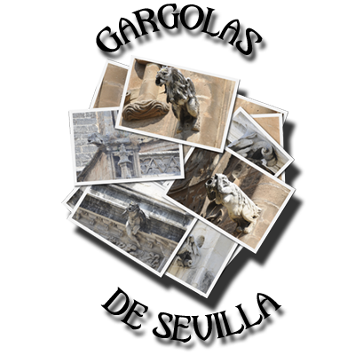
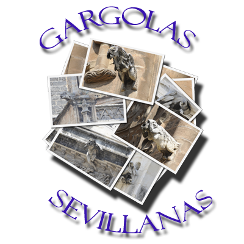
A grosso modo podemos hablar de tres tipos: Humanos, Animales (fantásticos y mitológicos) y Monstruos. Aunque una figura puede tener mezclas de los tres tipos. Las figuras suelen ser Antropomorfos (mezcla de hombre o mujer con animales) y Demonios y Monstruos, siendo animales híbridos, combinados con diversas partes de animales.
El origen de las gárgolas góticas, es el periodo de mayor auge, donde proliferan fundamentalmente en los edificios religiosos como Catedrales, iglesias, conventos, etc. Talladas en piedra.
Las gárgolas de cerámica más ilustres. Las podemos encontrar en el
pabellón Real y la Plaza de España, creadas por el arquitecto Aníbal González para la
exposición universal de 1929.
Las más modernas podemos verlas en el palacio de congresos y exposiciones, aunque estas
últimas son más bien mascaras en lugar de las figuras vistas antes.
También podemos encontrarlas en algunas fachadas de edificios antiguos pero ya de la
época moderna, hechas por encargos.
Situada en el pabellón de Perú, de la exposición universal de 1929
Lamentablemente, ya no se hacen las gárgolas de piedra del estilo
gótico o mitológico.
Con los nuevos tiempos, las más antiguas ponían una quimera al lado del desagüe y las
más modernas es poner un canalón, teniendo formas más simples y metálicas, aunque hay de
formas de dragones.
También otra variante es poner mascarones y medallones
grutescos en las fuentes aprovechando la salida del agua.
|
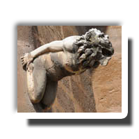 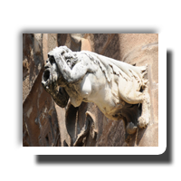 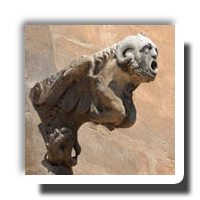 |
|
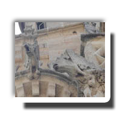 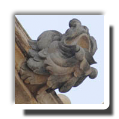 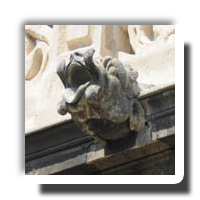 |
|
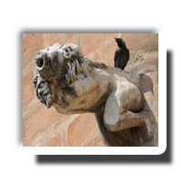 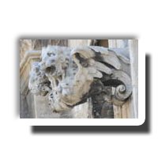 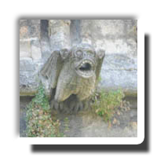 |
|
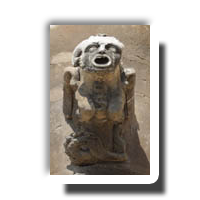 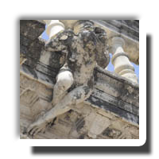 |
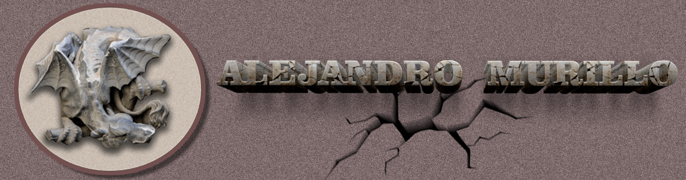